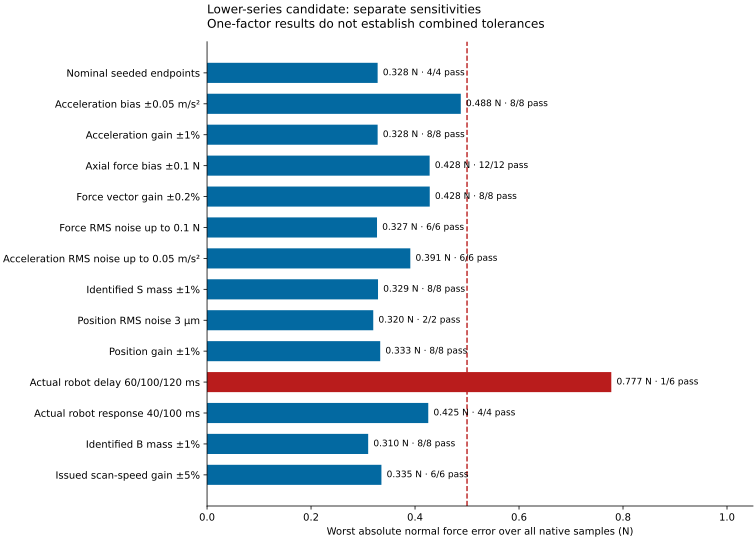
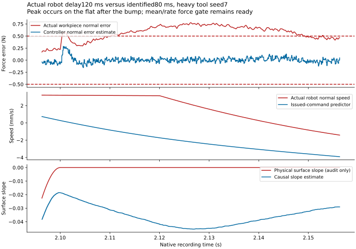

112 executed histories: 107 passes and 5 force failures. Two additional endpoint configurations have six paired software proof recordings with bitwise uninstrumented/zero-instrument and Normal/Accelerator equality.
These are separate one-factor sensitivities on the legacy sensing source. They establish neither a combined sensor budget nor a full-range uncertainty qualification. Final actual-AA joint cases are pending their own recordings.
Every force score uses the complete native normal-force history, including startup. The five failures vary actual robot transport while keeping the issued-command predictor fixed. All histories complete without contact loss or travel stops; the large added acceleration-noise points briefly clip drive effort or voltage.


At 2.1263 s, the workpiece experiences 50.777479 N while the controller estimates 50.019716 N. Actual robot speed is +2.138 mm/s while its issued-command predictor gives −2.199 mm/s. The slope estimate is −0.0453 on a physically flat surface. No voltage clipping occurs in this failure. Queued motion and an incorrect robot predictor can therefore defeat the mean/rate force-stability gate.
| Scenario | Executed | Passed | Worst normal error (N) |
|---|---|---|---|
| baseline | 4 | 4 | 0.328079499 |
| accelerometer_bias | 8 | 8 | 0.488019149 |
| accelerometer_scale | 8 | 8 | 0.328079478 |
| axial_force_bias | 12 | 12 | 0.428090342 |
| force_vector_scale | 8 | 8 | 0.428302476 |
| force_vector_noise | 6 | 6 | 0.326877966 |
| accelerometer_noise | 6 | 6 | 0.390943251 |
| identified_S_mass | 8 | 8 | 0.328810623 |
| position_noise | 2 | 2 | 0.319649996 |
| position_scale | 8 | 8 | 0.333031543 |
| robot_actual_delay | 6 | 1 | 0.777478700 |
| robot_actual_response | 4 | 4 | 0.425442673 |
| light_accelerometer_bias | 4 | 4 | 0.071954105 |
| light_force_bias | 4 | 4 | 0.153007954 |
| light_identified_S_mass | 4 | 4 | 0.053945112 |
| light_position_scale | 4 | 4 | 0.053937584 |
| identified_B_mass | 8 | 8 | 0.309876452 |
| identified_scan_speed | 6 | 6 | 0.335360657 |
| light_identified_scan_speed | 2 | 2 | 0.053133590 |
The configured 33.6 N common preload passes every history. The shared feasible interval is 30.449–36.786 N; combined free/installed spring lengths are 37.18/30.374 mm. This verifies the spring-only packing constraint for these traces.
Frozen model SHA256:a0c2e358503d51c53c630ca436f20c1a618c5d024f98dd46338ee328f6c94f81
Candidate SHA256:94fcfa29c708c705c2dccf3db34296568fd90f53f6b3b51cfe929e5a52e53738. Exact source/helper/recipe hashes, actual and identified parameters, failed full histories and native balance audits are linked in the machine-readable evidence.